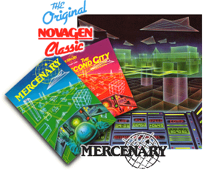
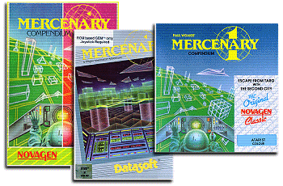
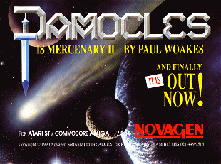

|

AEX has selected Mercenary
from Novagen software as its first History File candidate.
A game of pure genius by Paul Woakes, it not only exceeds
the boundaries of the typical adventure game, it breaks
them wide open. The programming prowess of Paul
Woakes is shown here in a stunning 3D world that in 1984
was revolutionary for a home computer game.
Novagen released few titles in
its time as both developer and publisher, but over the
course of nine plus years, it became synonymous with
quality products and a game series called Mercenary...
In 1984, most home computer
games were conversions of arcade titles, or imitations of
the same titles with different names, very few games could
be said to be original. You had all the typical
genres, such as shoot 'em ups and platform games, but
nothing truly ground breaking. Some titles began to
break the mould, such as Elite from Acornsoft (BBC Micro)
and a few others, but when Novagen released Mercenary, it
was obvious right from the start that this was a new type
of computer game.
Mercenary was unique for a
number of reasons. Not only did the game look
amazing, with a super fast vector world for you to explore
in complete freedom, it held your imagination totally, it
was in fact as if you were actually there. There was
no "manual" as such with the original game, just a basic
introduction and the usual loading and play instructions -
this was a game you had to figure out by yourself.
Well, you weren't totally alone, you had a companion with
you called "Benson", a computer and navigation system
which had a very dry sense of humour!
Upon loading the game you are
entering the Nova system, but unfortunately your
interstellar craft becomes unstable, and you crash land on
a green planet called "Targ". Targ is home to the
"Palyars", but the beleaguered inhabitants are in
continuous conflict with an alien race of robots called
the Mechanoids. Its from the surface of this planet
that your adventure starts, but its also up to you to take
the challenges that are offered. Targ has a has
beautiful "central city", and once you have acquired some
sort of craft, you can freely explore the wonderful city
limits, it is advised not to walk around the city as this
may take you some time...

Your ultimate objective is to
find an interstellar spaceship to take you off the planet.
As the name suggests, you are a mercenary and depending on
the offers of work you may receive while on Targ, its up
to you to decide your own fate. You will discover
fascinating details on the surface, but you will also have
to make your way underground... The "Colony Craft"
which orbits Targ will also play a crucial role in your
escape.
Mercenary was released on all
major home computer formats, but it wasn't until the ST
arrived that Mercenary was truly appreciated. After
being amazed that your Atari 800 could actually display a
game of such complexity, it was to see it running on the
latest Atari computer that made heads turn. The
speed of the vector world had increased dramatically, and
the game was an even better experience, in fact, I'm sure
anybody who had completed the game on their 8-Bit computer
bought the ST version without any hesitation... I know I
did!
Novagen released an expansion
pack for the original game called "Mercenary - The Second
City" in 1986. This would see you return to the
planet Targ's southern hemisphere, a much more bleak
geography to the lush green north of the planet, Targ's
second city is closer to the sun and daylight is a
constant red haze. In Mercenary One, you had an
unfortunate run-in (actually, several) with the
Palyar Commander's brother-in-law, and during your
absence, has been promoted to the Prison Governor of the
Second City - so beware, he knows your in town!

The Second City wasn't the
much anticipated Mercenary 2, that was still another 4
years away. The Second City was simply an "add-on"
that presented a new set of challenges and utilised the
original game engine. Not that there was anything
wrong with that, it turned out to be an excellent addition
to the original and easily twice as difficult as the first
game.
With great anticipation, and
many delayed launch dates, Damocles finally hit the stores
in 1990. Arriving
in the Gamma system and landing on the planet Eris, you
find that the comet Damocles is due to collide with the
planet in a few hours time and you are the only one who
can (possibly) stop it.. To say Damocles was a step
above the original would be an understatement, as the game
now sported a solid 3D world and a much larger game area.
Damocles reportedly took over 2 years to complete, as Paul
Woakes had taken a little break from programming the
original Mercenary for a while and during that time gave
us "Encounter" and "Backlash" for the ST, but the wait was
worth it.
|
|
Damocles was everything and
more which had been hoped for in the most eagerly awaited
sequel to the original Mercenary game. To see
Damocles running on the humble Atari ST, you just
had to admire the skills of the programmer Paul Woakes,
because it just didn't seem possible to squeeze this much
out of the 8Mhz 68000 CPU. It was enough just to
watch the perfect geometry of the planets as they moved
across the night sky as to be amazed that you also had a
great game in front of you. Although the ST and
Amiga versions of Damocles were hailed as a masterpiece,
Damocles on the PC had the benefit of an even more
powerful platform, utilising VGA colour and textured
polygons, but a still unknown conflict between Novagen and
the publisher of the PC version, Psygnosis, meant the game
would never be released. It is rumoured that the PC
version was practically complete.

The last and final instalment
of the Mercenary series was creatively named "Mercenary 3"
and it was launched in 1991. Mercenary 3 was a much
more ambitious game to its predecessor, it was much larger
and you could "fly" to many more locations and planets.
Some less enthusiastic players would be disappointed with
the game as it resembled Damocles too closely to be a
"new" game, and the additional features did seem to slow
the physical speed of the Damocles engine, which the
Mercenary 3 game was developed upon. Even so, for
the Mercenary purist, this follow-up was just as good as
Damocles, if not better, and the story line was more
advanced, with a political angle very much evident.
If any game series deserved a
remake to current or future PC or console platforms,
Mercenary is it. To imagine the possibilities
available to the game with today's technology is an
exciting prospect. Today, Paul Woakes is working at
Archer McLean's company Awesome Developments, and
according to Archer, Paul still has the rights to the
series and is very much considering a modern remake on a
much grander scale. We will just have to wait and
see if the dream becomes a reality for the restless
Mercenaries out there, waiting for their next mission...
© 1997-2003 Atari Explorer - All trademarks acknowledged.
|